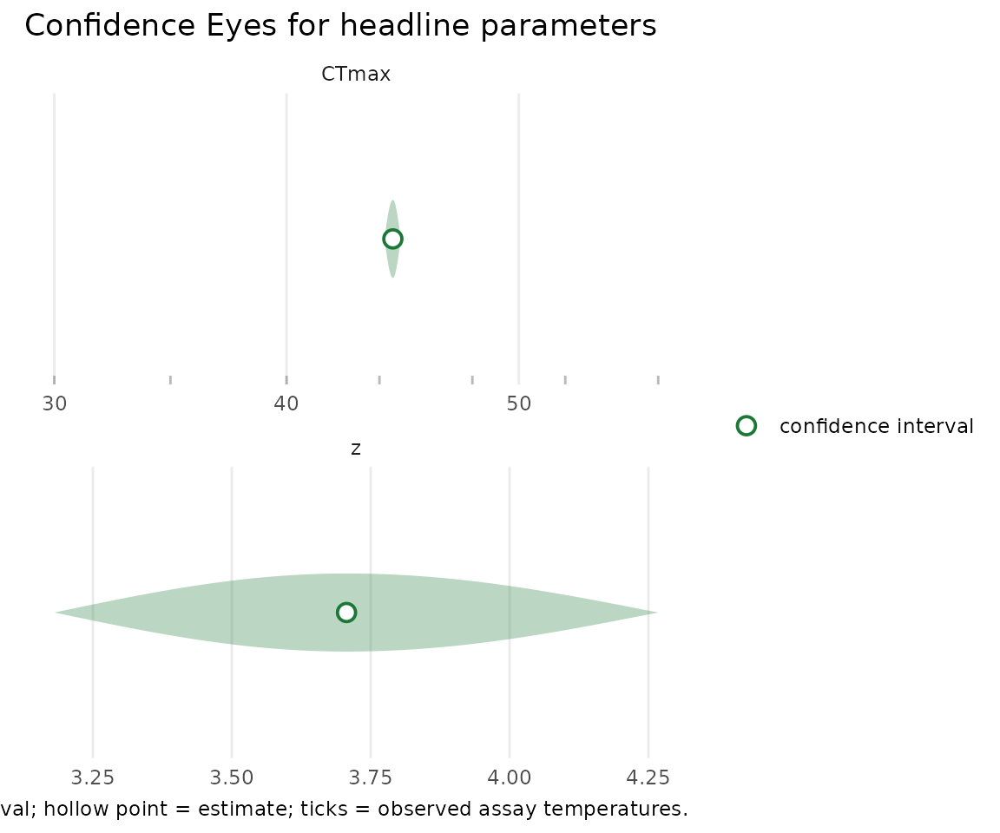
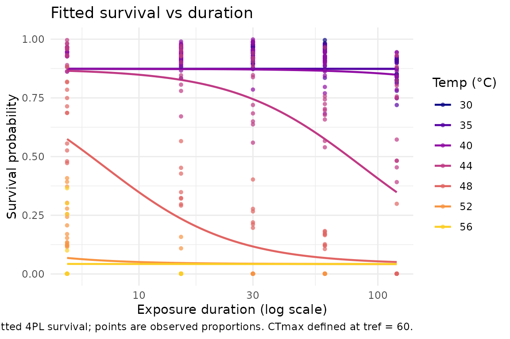

Case study: snow-gum leaf PSII — a continuous-proportion sublethal endpoint
Source:vignettes/case-study-leaf-psii.Rmd
case-study-leaf-psii.RmdThis article fits a 4PL thermal-tolerance curve to a
continuous-proportion, sublethal endpoint: the retained
photosystem-II (PSII) function of snow-gum (Eucalyptus
pauciflora) leaves after a heat dose. It is the
freqTLS showcase for the beta family — the
right likelihood when the response is a bounded ratio in
[0, 1] with no trials denominator — and it mirrors the
leaf-PSII case study in bayesTLS,
fit here by maximum likelihood. The fit runs live (TMB, no
Stan); CTmax and z carry
profile-likelihood confidence intervals.
The dataset
snowgum_psii is vendored from bayesTLS
under CC BY 4.0 (see ?snowgum_psii). Each row is one leaf
disc heated at a (Temp, Time) combination; the response
fvfm_prop is the retained-PSII proportion
— the chlorophyll-fluorescence efficiency (Fv/Fm) after the heat dose
divided by its value before. A value near 1 means PSII was essentially
undamaged; near 0 means function was lost.
data(snowgum_psii)
str(snowgum_psii)
#> 'data.frame': 394 obs. of 8 variables:
#> $ Temp : num 30 30 30 30 30 30 30 30 30 30 ...
#> $ Time : num 15 15 15 15 15 15 15 15 15 15 ...
#> $ recovery : Factor w/ 2 levels "Dark","Light": 1 1 1 1 1 1 2 2 2 2 ...
#> $ plant : Factor w/ 6 levels "1","2","3","4",..: 1 2 3 4 5 6 1 2 3 4 ...
#> $ meas_day : Factor w/ 2 levels "1","2": 2 2 2 2 2 2 2 2 2 2 ...
#> $ initial_fvfm: num 0.862 0.837 0.851 0.831 0.835 0.842 0.859 0.851 0.856 0.85 ...
#> $ final_fvfm : num 0.794 0.79 0.807 0.781 0.805 0.809 0.79 0.767 0.798 0.775 ...
#> $ fvfm_prop : num 0.921 0.944 0.948 0.94 0.964 ...
range(snowgum_psii$Temp)
#> [1] 30 56
range(snowgum_psii$Time)
#> [1] 5 120There are 394 leaf-disc measurements across a 7 × 5 temperature-by-duration grid. Three features set this case study apart:
-
The response is a continuous proportion, not a
count. Retained PSII is a ratio of two continuous fluorescence
readings, so there is no trials column to pass — the
binomial and beta-binomial families do not apply. The natural likelihood
for a bounded continuous response is the beta family
(
family = "beta"). -
Timeis in minutes. We reportCTmaxat a one-hour reference exposure (t_ref = 60). - The endpoint is functional (sublethal), not lethal. Loss of PSII efficiency is photosynthetic damage, not death — which limits what we can report (see “No T_crit” below).
Boundary values
The beta density is undefined at exactly 0 and 1, and this dataset
contains 89 measurements at fvfm_prop == 0 (complete PSII
loss at the hottest, longest doses). standardize_data() /
fit_4pl() clamp such boundary values inward and warn, so
the adjustment is never silent — the honest, documented behaviour for a
continuous-proportion response.
Fitting the model: the beta family
We standardise the leaf table (naming the response with
proportion =, which flags the continuous beta response) and
fit the 4PL by maximum likelihood. The temperature effect runs through
the midpoint (shared low, up, k),
and the beta family adds one dispersion parameter, phi.
std <- standardize_data(
snowgum_psii,
temp = "Temp", duration = "Time", proportion = "fvfm_prop",
duration_unit = "minutes"
)
fit <- suppressWarnings(fit_4pl(std, family = "beta", t_ref = 60, quiet = TRUE))$fit
fit$convergence$code # 0 = converged
#> [1] 0The thermal limit CTmax and thermal sensitivity
z, with profile-likelihood confidence intervals:
est <- confint(fit, c("CTmax", "z"), method = "profile")
est[, c("parameter", "estimate", "conf.low", "conf.high", "method")]
#> # A tibble: 2 × 5
#> parameter estimate conf.low conf.high method
#> <chr> <dbl> <dbl> <dbl> <chr>
#> 1 CTmax 44.6 44.2 44.9 profile
#> 2 z 3.71 3.18 4.27 profilePSII function collapses near 44.6 °C at a one-hour
exposure, with a thermal sensitivity z of about 3.7
°C per tenfold change in exposure time. Crucially, this
CTmax is the 4PL midpoint of a sublethal,
functional endpoint — the temperature at which half of
photosystem-II efficiency is lost — not the lethal temperature at which
the plant dies. It is not directly comparable to the
lethal CTmax values in the animal case studies (see the
summary vignette’s note on non-comparable endpoints). These are
confidence intervals from the profile likelihood — the parameter values
the data do not reject at the 95% level — not credible intervals or
posterior summaries.
The Confidence Eye
plot_confidence_eye(fit, parm = c("CTmax", "z"), method = "profile")
The retained-PSII curve
plot_survival_curves(fit)
The y-axis is the retained-PSII proportion rather than a survival fraction, but the 4PL shape and its temperature shift read the same way: hotter exposures collapse the curve toward zero at shorter times.
No T_crit for this endpoint
We deliberately do not report a rate-multiplier
T_crit here. T_crit is a
lethal, damage-accumulation concept; retained PSII is a
functional, sublethal endpoint, so a
T_crit from this curve would not be a thermal-death
threshold. The reportable quantities are CTmax and
z only.
Value-add: profile and bootstrap intervals on a continuous proportion
Two things distinguish this analysis from the count benchmark. First, both interval methods are available and agree — the default profile interval respects the asymmetry of the likelihood, and a prior-free parametric bootstrap gives a second, independent confidence interval:
suppressWarnings(
confint(fit, c("CTmax", "z"), method = "bootstrap", nboot = 199, boot_seed = 1)
)[, c("parameter", "estimate", "conf.low", "conf.high", "method")]
#> # A tibble: 2 × 5
#> parameter estimate conf.low conf.high method
#> <chr> <dbl> <dbl> <dbl> <chr>
#> 1 CTmax 44.6 44.2 44.9 bootstrap
#> 2 z 3.71 3.16 4.17 bootstrapSecond, the classical two-stage comparator cannot
represent this response at all: it consumes integer survival counts out
of a known number of trials, and a continuous PSII ratio has no such
denominator. The beta family is what lets freqTLS fit a 4PL
to a bounded continuous endpoint, with the same profile-likelihood
machinery used for the count families.
A note on the data and the published value
The shipped snowgum_psii is the analysis-ready table —
leaf-disc proportions on a temperature × duration grid. It does
not carry the measurement-day and glasshouse-room batch
identifiers of the original experiment, so the fit above is the
marginal (no random-effect) estimate. The published
Bayesian analysis soaks that batch structure into random effects, which
raises the estimated thermal sensitivity (a higher z); on
the bundled, batch-free data the likelihood and the Bayesian fit agree
on a lower marginal z near 3.7. This is a
data-provenance difference, not a difference between the methods: given
the same rows and the same (here, no) random-effect structure, the
profile-likelihood and posterior summaries coincide — the data, not the
prior or the algorithm, are driving the estimate here. If you need the
batch-adjusted estimate, fit with a random intercept on the available
batch column,
e.g. fit_4pl(std, ctmax = ~ 1 + (1 | plant), family = "beta").
Boundary: what this case study is and is not
freqTLS is purpose-built for the 4PL thermal-tolerance
model class. This article uses it on a continuous-proportion,
sublethal endpoint via the beta family — the right tool when
the response is a bounded ratio without a trials denominator. Two
reminders: the endpoint is functional, not lethal, so
T_crit is out of scope; and when a study has
bounded counts (successes out of a known number
tested), prefer family = "beta_binomial" over clamping a
derived proportion.
Where to next:
vignette("frequentist-and-bayesian") explains why the
likelihood and Bayesian fits coincide here;
vignette("comparing-to-bayesTLS") shows the beta family in
the three-way comparison.